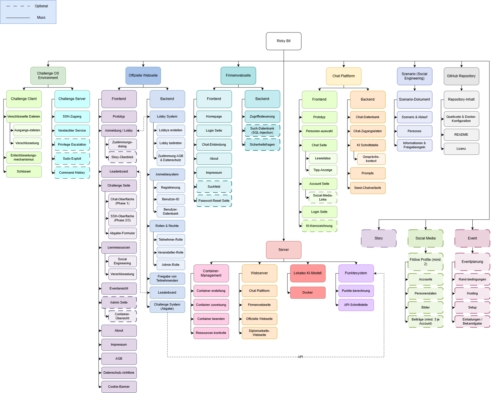

Über das Projekt
Risky Bit ist eine Hacking Challenge mit realen Systemen/Ansätzen und Schwachstellen, sowie einem kompetitiven Aspekt. Zusätzlich lernen SpielerInnen durch die einzelnen Herausforderungen spielerisch Bereiche der IT-Security kennen und können sich so wert-volle Skills aneignen.
Für dieses Projekt wurden unter anderem React, Docker und ... (TODO: Technologien) verwendet. Zudem wurden für gewisse Challenges KI-Modelle verwendet.
Ausgangslage & Lösung
Ausgangssituation
Es gibt heutzutage viele Webseiten und Apps, welche Usern spielerisch ermöglichen, diverse Hacking-Ansätze auszuprobieren. Allerdings haben sie oft keinen roten Faden und bieten wenig bis kaum Möglichkeiten, dyna-misch zwischen Ansätzen zu wechseln und fokussieren sich für Aufgaben auf einzelne Aspekte des Hackings. Sie konzentrieren sich oft auf isolierte Schwachstellen und übersehen dabei die Komplexität großer Systeme. Ebenfalls fokussieren sie sich vermehrt auf das Lernen des Hackings und die User lernen nicht die Schwachstellen, die dahinter liegen, und wie diese in eigenen Systemen verhindert werden können. Daher haben wir uns entschieden, eine Hacking-Challenge zu erstellen, welche genau diese Probleme löst. Unsere Challenge lässt Nutzern viele Möglichkeiten und bietet mit dieser Diver-sität an Herangehensweisen einen Mehrwert beim Erlernen neuer Skills. Zudem zeigt sie auch, wie man ebendiese Schwachstellen auch beheben und schützen kann und bietet dabei einen wertvollen Einblick in die IT-Security.
Unsere Lösung
Ziel des Projekts ist es, IT-Sicherheitskonzepte praxisnah und interaktiv zu vermitteln. Teil-nehmerInnen sollen verschiedene Angriffsszenarien nachvollziehen und dabei ein strukturiertes Vorgehen im Bereich Cybersecurity erlernen. Die einzelnen Aufgaben werden in einer kontrol-lierten und isolierten Umgebung durchgeführt und behandeln unter anderem Social Enginee-ring, Verschlüsselung, Linux-Systemadministration und das Ausnutzen von Sicherheitslücken. Dafür wird eine öffentliche Webseite erstellt, auf welcher die Cybersecurity-Challenge durch-geführt und verwaltet wird. TeilnehmerInnen können mithilfe eines Lobby-Codes einem Event beitreten. Nach dem Beitritt wird für jede Person ein eigenes Benutzerkonto sowie eine isolier-te Challenge-Umgebung erstellt. Dadurch wird verhindert, dass sich TeilnehmerInnen gegensei-tig beeinflussen oder auf die Umgebung anderer Personen zugreifen können. Auf der Webseite können TeilnehmerInnen unter anderem den aktuellen Fortschritt, die ver-fügbaren Lernressourcen und das Leaderboard einsehen. Die Ergebnisse der einzelnen Aufga-ben werden automatisch überprüft und die dafür vergebenen Punkte dem jeweiligen Benutzer-konto zugeordnet. Die Durchführung der Challenge erfolgt innerhalb mehrerer voneinander abgegrenzter Phasen. Jede Phase besitzt ein eigenes Ziel und baut auf den Ergebnissen der vorherigen Phase auf.
Welches Problem lösen wir?
Durch Risky Bit können Schüler*innen spielerisch über Cyber-Security-Themen lernen und diese praktisch anwenden. Außerdem bietet sie einen Einblick in die Arbeitswelt, in der ähnliche Sicherheitsschwachstellen existieren.
Zielsetzung
Mit Risky Bit verfolgen wir das Ziel, IT-Sicherheit praxisnah und spielerisch erlebbar zu machen. Dafür entwickeln wir eine öffentliche Challenge-Plattform mit eigenem Anmelde-, Punkte- und Leaderboard-System sowie isolierten Umgebungen für jede teilnehmende Person. Kernstück ist eine simulierte Firmenwelt samt KI-gestützter Chatplattform, über die realistische Social-Engineering- und Hacking-Szenarien durchlebt werden können. Details zu den einzelnen Challenges bleiben bewusst geheim, damit der Überraschungs- und Lerneffekt beim eigentlichen Event erhalten bleibt. Begleitend entsteht ein öffentliches GitHub-Repository, damit Schulen und Unternehmen das Projekt auch nach der Diplomarbeit weiterverwenden können.
Detailierte ZielbeschreibungVorgehensweise
TODO:
Ergebnisse

Alle Features im Detail
Team
-
Valerian Hobel
Projektleiter - Scrum Master
Chat Plattform, Firmenplattform, KI-Systeme
valerian.hobel@htl.rennweg.at -
Christoph Neumayer
Vize-Projektleiter - Product Owner
Frontend, Diplomarbeits-Webseite, Challenge- und Punktesystem
christoph.neumayer@htl.rennweg.at -
Gabriel Berger
Projekt-Teammitglied
Erstellen der Sicherheitsschwachstellen und Challenges
gabriel.berger@htl.rennweg.at -
Alexander Reiter
Projekt-Teammitglied
Backend, Autorisierung und Authentifizierung
alexander.reiter@htl.rennweg.at